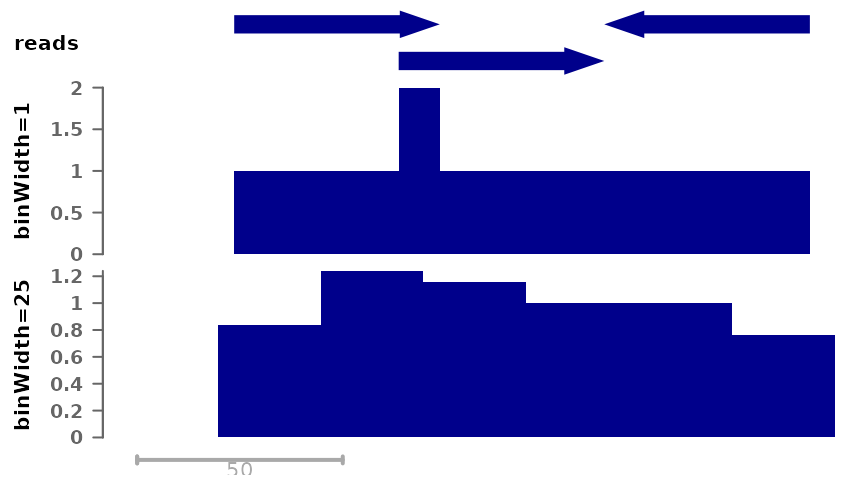
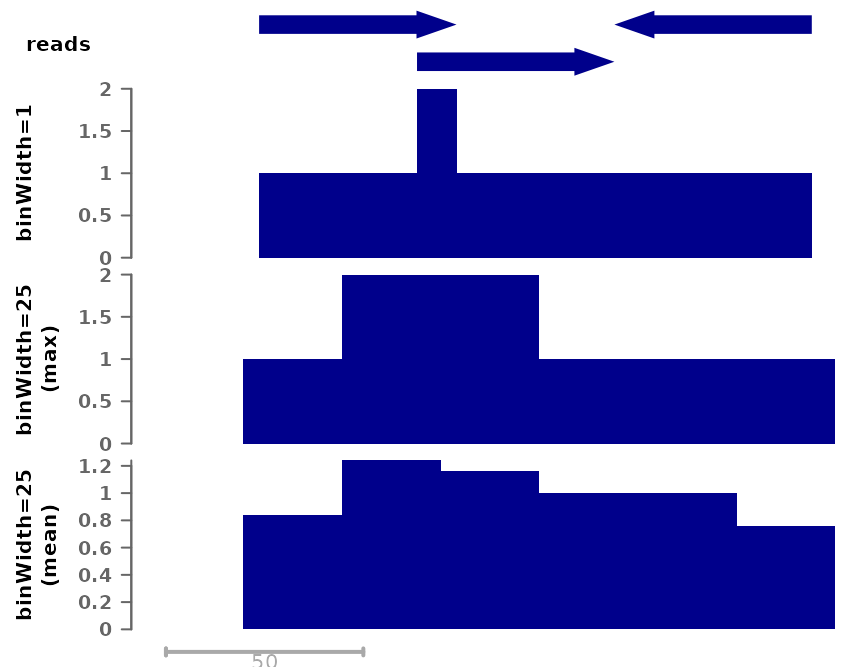
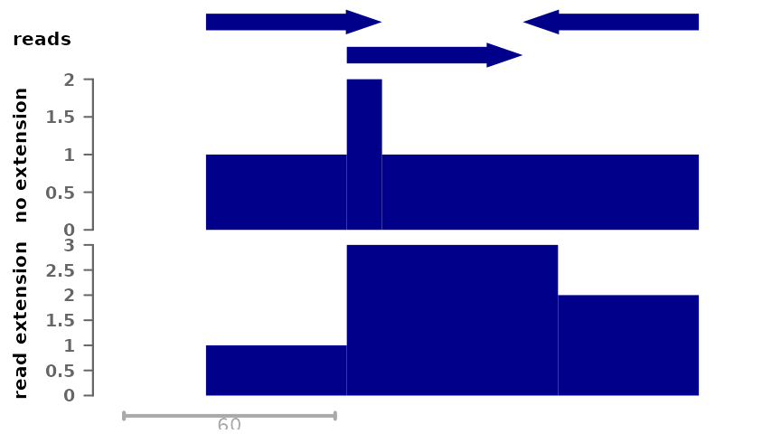
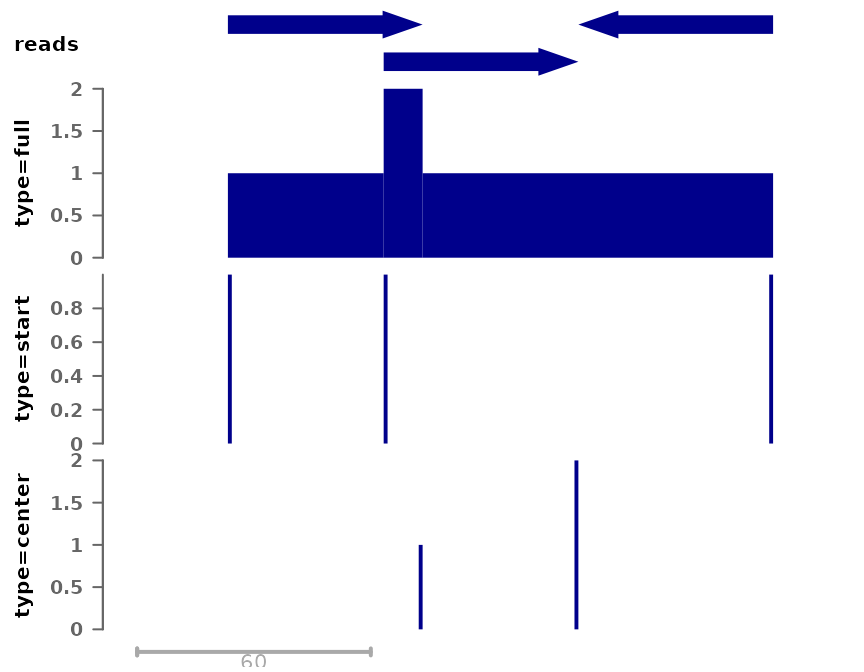
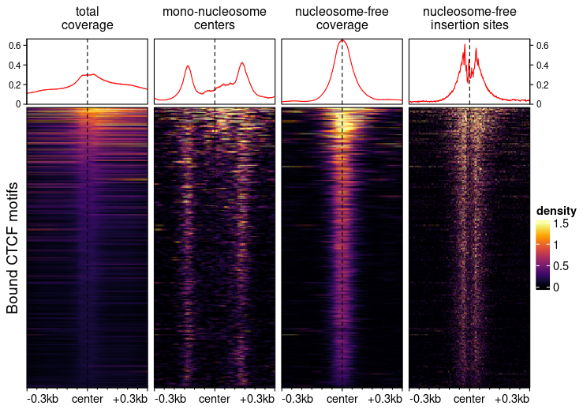

Generating bigwig tracks with bam2bw
Pierre-Luc Germain
Lab of Statistical Bioinformatics, University of Zürich;D-HEST Institute for Neuroscience, ETH Zürich, Switzerlandbam2bw.RmdAbstract
This vignette documents the use of the ‘bam2bw’ function of the epiwraps package, which generates bigwig tracks from alignment files in an efficient and flexible fashion.
Introduction
The bam2bw function can be used to compute
per-nucleotide or per-bin coverage from alignments and save it to a
bigwig file. In this process, information about individual reads is
lost, but the produced signals are considerably more lightweight and
amenable to visualization. The bigwig format is readily queried from R
or compatible with a variety of tools, including genome browsers.
Many ways of compiling coverage
To introduce the different variations on coverage, let’s assume you’ve go the following single-end reads:
## Error in get(paste0(generic, ".", class), envir = get_method_env()) :
## object 'type_sum.accel' not found
# we create some arbitrary genomic ranges
gr <- GRanges("chr1", IRanges(c(30,70,120), width=50), strand=c("+","+","-"),
seqlengths=c(chr1=500))
plotSignalTracks(list(reads=gr), region="chr1:1:180", extend=0, genomeAxis=FALSE)For testing purposes, we’ll save this as a bam file and index it:
bam <- tempfile(fileext = ".bam") # temp file name
rtracklayer::export(gr, bam, format="bam")
Rsamtools::indexBam(bam)## /tmp/RtmpcVZgGT/file196f25158a6b.bam
## "/tmp/RtmpcVZgGT/file196f25158a6b.bam.bai"Using these example reads, we can illustrate different ways of computing coverages.
First, we can save coverage at different resolutions, from full resolution (each nucleotide is a single bin) to larger bin sizes, the latter giving smaller filesizes:
# Full coverage with bin width of 1 nucleotide (i.e. full resolution)
cov_full_bw1 <- tempfile(fileext = ".bw") # temp file name
bam2bw(bam, cov_full_bw1, binWidth=1L, scaling=FALSE)## `paired` not specified, assuming single-end reads. Set to paired='auto' to automatically detect.## Reading in signal...## Writing bigwig...
# Full coverage with larger bins
cov_full_bw25 <- tempfile(fileext = ".bw")
bam2bw(bam, cov_full_bw25, binWidth=25L, scaling=FALSE)## `paired` not specified, assuming single-end reads. Set to paired='auto' to automatically detect.## Reading in signal...## Writing bigwig...
plotSignalTracks(list(reads=gr, "binWidth=1"=cov_full_bw1, "binWidth=25"=cov_full_bw25),
region="chr1:1:180", extend=0)
Both tracks compile the number of reads that overlap each position, but in the bottom track the signal is by chunks of 25 nucleotides. By default, the maximum signal inside a bin is used, however it is possible to change this:
# Using mean per bin:
cov_full_bw25mean <- tempfile(fileext = ".bw")
bam2bw(bam, cov_full_bw25mean, binWidth=25L, binSummarization = "mean", scaling=FALSE)## `paired` not specified, assuming single-end reads. Set to paired='auto' to automatically detect.## Reading in signal...## Writing bigwig...
plotSignalTracks(list(reads=gr, "binWidth=1"=cov_full_bw1,
"binWidth=25\n(max)"=cov_full_bw25,
"binWidth=25\n(mean)"=cov_full_bw25mean),
region="chr1:1:180", extend=0)
In most cases, single-end reads are just the beginning of the DNA
fragments obtained, and we know the average size of the fragments from
library prep QC (if not, see the estimateFragSize function,
or the simpler estimate.mean.fraglen function of the chipseq
package). It is therefore common to extend reads to this size when
computing coverage, so as to obtain the number of fragments (rather than
reads) coverage each position. This can be done as follows:
# Here the reads are 50bp, and we want to extend them to 100bp, hence _by_ 50:
cov_full_ext <- tempfile(fileext = ".bw")
bam2bw(bam, cov_full_ext, binWidth=1L, extend=50L, scaling=FALSE)## `paired` not specified, assuming single-end reads. Set to paired='auto' to automatically detect.## Reading in signal...## Writing bigwig...
plotSignalTracks(list(reads=gr, "no extension"=cov_full_bw1,
"read extension"=cov_full_ext),
region="chr1:1:190", extend=0)
Taking into account read extension shows better the peak at the center, which is indicative of the fact that this is the region that was the most enriched in the captured fragments.
Instead of computing coverage, we could compute the number of reads starting, ending, or being centered at each position:
# Here the reads are 50bp, and we want to extend them to 100bp, hence _by_ 50:
cov_start <- tempfile(fileext = ".bw")
bam2bw(bam, cov_start, binWidth=1L, extend=50L, scaling=FALSE, type="start")## `paired` not specified, assuming single-end reads. Set to paired='auto' to automatically detect.## Reading in signal...## Writing bigwig...
cov_center <- tempfile(fileext = ".bw")
bam2bw(bam, cov_center, binWidth=1L, extend=50L, scaling=FALSE, type="center")## `paired` not specified, assuming single-end reads. Set to paired='auto' to automatically detect.## Reading in signal...## Writing bigwig...
plotSignalTracks(list(reads=gr, "type=full"=cov_full_bw1,
"type=start"=cov_start, "type=center"=cov_center),
region="chr1:1:190", extend=0)
Note that when extending reads, as in this case, the position (e.g. “center”) are relative to the extended read (i.e. extension is applied first).
Example heatmaps created using different bigwig generation procedures
The following figure, created using epiwraps (see
the vignette on generating such
plots), represent chromatin accessibility (ATAC-seq) signals around
bound CTCF motifs in T-cells. The different signals are based on
different bigwig files derived from the same bam file using the
functions described above.

- The first heatmap (‘full coverage’) was generated with default parameter, and is the fragment coverage (i.e. how many fragments overlap any given location).
- The second heatmap shows the fragment of sizes compatible with
mono-nucleosomes, resizing fragments from their centers. The exact
arguments used were
minFragLength=147, maxFragLength=230, type="center", extend=25L. Using this we can see nucleosomes well-positioned at some distance from CTCF binding sites, but a relative depletion of nucleosomes at the bound site itself. - The third shows the coverage of nucleosome-free fragments, in this
case it was used with
maxFragLength=120. These are indicative of TF binding, and indeed we only see and enrichment in the center. - The fourth shows where the transposase inserted itself, and was
generated with
trim=4L, binWidth=1L, maxFragLength=120, type="ends". Using this we can see a nice footprint protected from the transposase by CTCF binding.
For more information about these parameters, see
?bam2bw.
ATAC fragment sizes convey rich information, but they are not perfect. For example, regions of DNA bound by multiple TFs can sometimes be captured as longer fragments which we would mistakenly classify as mono-nucleosome containing.
Working with fragment files as an input
If you use fragment files (preferably tabix-indexed) rather than bam
files as input, you can still perform most of the above tasks. See the
?frag2bw function for more information.
Session information
## R version 4.4.2 (2024-10-31)
## Platform: x86_64-pc-linux-gnu
## Running under: Ubuntu 22.04.5 LTS
##
## Matrix products: default
## BLAS: /usr/lib/x86_64-linux-gnu/openblas-pthread/libblas.so.3
## LAPACK: /usr/lib/x86_64-linux-gnu/openblas-pthread/libopenblasp-r0.3.20.so; LAPACK version 3.10.0
##
## locale:
## [1] LC_CTYPE=C.UTF-8 LC_NUMERIC=C LC_TIME=C.UTF-8
## [4] LC_COLLATE=C.UTF-8 LC_MONETARY=C.UTF-8 LC_MESSAGES=C.UTF-8
## [7] LC_PAPER=C.UTF-8 LC_NAME=C LC_ADDRESS=C
## [10] LC_TELEPHONE=C LC_MEASUREMENT=C.UTF-8 LC_IDENTIFICATION=C
##
## time zone: UTC
## tzcode source: system (glibc)
##
## attached base packages:
## [1] grid stats4 stats graphics grDevices utils datasets
## [8] methods base
##
## other attached packages:
## [1] epiwraps_0.99.105 EnrichedHeatmap_1.36.0
## [3] ComplexHeatmap_2.22.0 SummarizedExperiment_1.36.0
## [5] Biobase_2.66.0 GenomicRanges_1.58.0
## [7] GenomeInfoDb_1.42.1 IRanges_2.40.1
## [9] S4Vectors_0.44.0 BiocGenerics_0.52.0
## [11] MatrixGenerics_1.18.0 matrixStats_1.4.1
## [13] BiocStyle_2.34.0
##
## loaded via a namespace (and not attached):
## [1] RColorBrewer_1.1-3 rstudioapi_0.17.1 jsonlite_1.8.9
## [4] shape_1.4.6.1 magrittr_2.0.3 GenomicFeatures_1.58.0
## [7] rmarkdown_2.29 GlobalOptions_0.1.2 fs_1.6.5
## [10] BiocIO_1.16.0 zlibbioc_1.52.0 ragg_1.3.3
## [13] vctrs_0.6.5 memoise_2.0.1 Rsamtools_2.22.0
## [16] RCurl_1.98-1.16 base64enc_0.1-3 htmltools_0.5.8.1
## [19] S4Arrays_1.6.0 progress_1.2.3 curl_6.0.1
## [22] SparseArray_1.6.0 Formula_1.2-5 sass_0.4.9
## [25] bslib_0.8.0 htmlwidgets_1.6.4 desc_1.4.3
## [28] plyr_1.8.9 Gviz_1.50.0 httr2_1.0.7
## [31] cachem_1.1.0 GenomicAlignments_1.42.0 lifecycle_1.0.4
## [34] iterators_1.0.14 pkgconfig_2.0.3 Matrix_1.7-1
## [37] R6_2.5.1 fastmap_1.2.0 GenomeInfoDbData_1.2.13
## [40] clue_0.3-66 digest_0.6.37 colorspace_2.1-1
## [43] AnnotationDbi_1.68.0 textshaping_0.4.1 Hmisc_5.2-1
## [46] RSQLite_2.3.9 filelock_1.0.3 httr_1.4.7
## [49] abind_1.4-8 compiler_4.4.2 bit64_4.5.2
## [52] doParallel_1.0.17 backports_1.5.0 htmlTable_2.4.3
## [55] BiocParallel_1.40.0 DBI_1.2.3 UpSetR_1.4.0
## [58] biomaRt_2.62.0 rappdirs_0.3.3 DelayedArray_0.32.0
## [61] rjson_0.2.23 tools_4.4.2 foreign_0.8-87
## [64] nnet_7.3-19 glue_1.8.0 restfulr_0.0.15
## [67] checkmate_2.3.2 cluster_2.1.6 generics_0.1.3
## [70] gtable_0.3.6 BSgenome_1.74.0 ensembldb_2.30.0
## [73] data.table_1.16.4 hms_1.1.3 xml2_1.3.6
## [76] XVector_0.46.0 foreach_1.5.2 pillar_1.10.0
## [79] stringr_1.5.1 circlize_0.4.16 dplyr_1.1.4
## [82] BiocFileCache_2.14.0 lattice_0.22-6 deldir_2.0-4
## [85] rtracklayer_1.66.0 bit_4.5.0.1 biovizBase_1.54.0
## [88] tidyselect_1.2.1 locfit_1.5-9.10 pbapply_1.7-2
## [91] Biostrings_2.74.1 knitr_1.49 gridExtra_2.3
## [94] bookdown_0.41 ProtGenerics_1.38.0 xfun_0.49
## [97] stringi_1.8.4 UCSC.utils_1.2.0 lazyeval_0.2.2
## [100] yaml_2.3.10 evaluate_1.0.1 codetools_0.2-20
## [103] interp_1.1-6 GenomicFiles_1.42.0 tibble_3.2.1
## [106] BiocManager_1.30.25 cli_3.6.3 rpart_4.1.23
## [109] systemfonts_1.1.0 munsell_0.5.1 jquerylib_0.1.4
## [112] dichromat_2.0-0.1 Rcpp_1.0.13-1 dbplyr_2.5.0
## [115] png_0.1-8 XML_3.99-0.18 parallel_4.4.2
## [118] pkgdown_2.1.1 ggplot2_3.5.1 blob_1.2.4
## [121] prettyunits_1.2.0 jpeg_0.1-10 latticeExtra_0.6-30
## [124] AnnotationFilter_1.30.0 bitops_1.0-9 viridisLite_0.4.2
## [127] VariantAnnotation_1.52.0 scales_1.3.0 crayon_1.5.3
## [130] GetoptLong_1.0.5 rlang_1.1.4 cowplot_1.1.3
## [133] KEGGREST_1.46.0